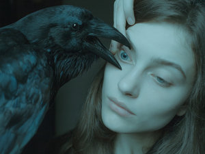
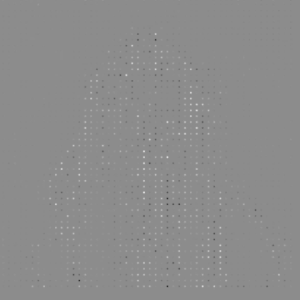

Draw
Draw is a model that recreates the mechanism of attention done by humans. This model has T time steps (defined by the user) over which the recurrent neural network will recreate the original image step by step. Letting the network decide which patches of the image is going to draw first in a blank canvas. I used this model over a single image instead of over a whole data set, because I wanted to see how the model which is intended to work with MNIST, or CIFAR would work over one picture. I trained the DRAW network with two images, the first one which I found randomly on archillet project and the other one which is done by Laura Makabresku (NSFW warning for the LM webpage).
Note: I used only a single channel for the DRAW model on the random glitch image.
 
Bonus gifs
The following gifs corresponds to different stages of the training of the raven picture.